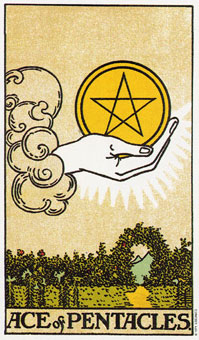

【关键词】 财富 享乐 安全 实质
云端中伸出一只捧着金币的手，金币在这里代表人间最实际的东西，包括金钱，财富与身体等。下面是花草繁盛的庭院，暗示着星币首牌不只有关物质，也可以延伸到精神层面星币首牌象征富足与安全，也象征着享乐与颓废。
推测：当星币首牌出现时，通常代表一个有关金钱与物质的新计划，且前进光明。但这并不代表以后就衣食无忧，它会提示你：想要的东西就在伸手可得之处。另外星币首牌可以表示加薪，获利，以及肉体与精神上的满足和娱乐。在感情上，星币首牌代表一段稳定且充满感官享受的关系，也可以表示感情的物化，如给对方一枚钻戒等。
星币王牌暗示，你有足够的钱好执行你的计划。
星币王牌代表一个开始。它可能是一个暂新的开始，或某种状态中以新局面的开端，这可由和其他牌的组合还印证。如果你有所质疑，在王牌旁边再加另外一张牌看看。
这张牌中，一只手自云端伸出，捧着一颗星币。这颗有五个角的星星(代表人体的五个部分：头、双手、双脚)指向上方，并有一个圈圈围绕着它。而方形的大拇指指甲象征星币类型的土型的、务实的本质。感情用事的身体或气氛在这只手的周围可以看得见。这只手延伸自精神层面……宇宙或万物之源。
在它之下有一个繁花盛开的庭院，被篱笆包围起来，避免受风害。有一条道路延伸到庭院之外，通向远方的山丘。这庭院象征星币类型和自然的连接，通向群山的道路暗示，以星币的务实作风，你所投资的金钱、时间或精力可能会带来极大的回馈。
这只安全的捧住星币的手暗示着，此时此刻你足以掌握住你的财富。
大体上的意义
星币王牌和务实的开始有关。它意味你有足够的金钱、精力，或充分的条件，来开始一项新计划。它暗示你可以平衡掉花费。不论目前花掉了多少钱，赚回来的绝对够本。
在事业的分析当中，星币王牌可能暗示一项新事业，或事业当中的一个新阶段。那条通往庭院之外的道路就是在告诉你，这个机会可以带你走多远。如果你拿到了这个星币，为它投资、为它工作吧，它将会让通往你目的地的道路平顺。
在健康的分析方面，这张牌暗示花掉的钱是用来增进或维持你身体的健康。它亦象征你在维持健康上面的投资。
在旅游的分析方面，它代表着你享受得起一个假期，在有关你住家环境的问题上，它暗示你供得起这个房子的花费，包括翻新或维修。
正位含义：
1.物质丰富的生活，同时，往往代表着精神生活欠佳。
2.想得到的都得到了。
3.获得利益，事事顺利，运气较佳。
4.安泰的生活状态。
逆位含义：
1.被强烈的欲望冲昏头脑，干一些自己冷静下来都认为不可理喻的事。
2.奢侈的生活。
3.因金钱导致声明狼籍。
4.精神虚空，物质丰富。
两性关系上的意义
星币王牌可能暗示，透过你的事业或工作环境，你正要和在其中认识的某个人开始一段关系。这个关系可能带来事业上的机会――生意上的合伙关系或财务合并。
不论在金钱或肉体上，你都有能力去追求这段关系，它在物质上的成功并具有潜力。这张王牌代表坚决而稳固地开始一段关系或关系中的一个新阶段。
倒立的星币王牌
当星币王牌出现倒立时，从精神世界中伸出来的手就没有办法在握住星币了，这暗示金钱或机会正从你的指尖流逝。在财务分析当中，这张牌可能暗示不论你赚进多少钱，花出去的还会更多。
大体而言，它象征着丧失机会，或没有能力去开展新事物。这些延迟可能是因为缺钱而引起的。虽然这个机会可能是一个肉体的机会，然而它依然可提供精神上的成长。
没有办法掌握住物质(真实)世界，是王牌倒立时的一个暗示：“我想做这些事，但是我没有钱。”它也可以表示一个不脚踏实地的人错失了一个机会。你可能比较会花钱，而比较不会赚钱。